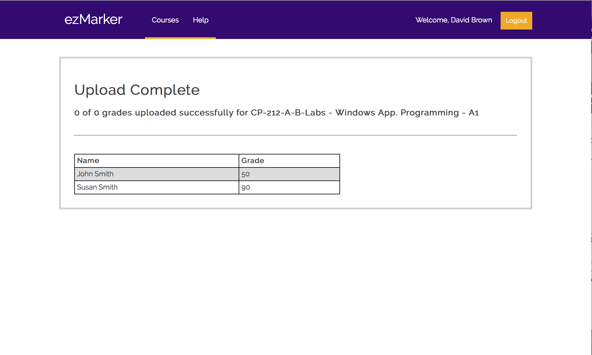

Version 2.1
Last updated: November xx, 2017
ezMarker is a web application that allows instructors at Wilfrid Laurier University to bulk upload grades and feedback into MyLearningSpace, with the integration of the Brightspace API supported by D2L. The goal of ezMarker is to solve the issues regarding inefficient manual grade uploading through the current MyLearningSpace interface. On average, it can take markers a few hours to manually upload grades for one class. Marking time is cut down to minutes with the use of ezMarker's bulk file uploading.
This documement describes the packages, front-end, back-end, and project structure of ezMarker.
There are PHP and Python versions of ezMarker. Both versions use corresponding versions of the Brightspace API Wrapper. The differences between the PHP and Python versions of ezMarker are described in the following two sections.
PHP (Hypertext Preprocessor) is a server-side scripting langauge. It is used for ezMarker's PHP version. For this project, an AWS (Amazon Web Services) Ubuntu server hosts the PHP website. Ubuntu supports Apache, an open-source HTTP Server that can serve web applications with backends such as PHP.
PHP is being used as the language for one of the ezMarker versions at the request of the client. This is a good choice for the backend because the project is simple to host on Apache, the Brightspace API has PHP support, and it is not a steep learning curve for the members of the group that do not have previous knowledge of PHP. There is minimal cost for hosting the PHP web application, and no cost to use the language PHP.
Python is the scripting language being used for ezMarker's Python version. Flask, a Python microframework with a built-in development server and debugger, is used to make this web application. To host the Python project, Herokuapp is used because of its support for Flask Apps.
Python is being used as the language for the other version of ezMarker at the request of the client. This is also a good choice for backend because the project was already started in this language by Harold Hodgins, the Brightspace API has some Python support, and many group members already have Python experience. There is currently no cost to host the Python web application, and no cost to use the language Python.

This section describes the front-end of ezMarker. See JSON Specifications for the design of the JSON objects.
Additional Notes:Brightspace takes care of generating the page and handling input.
This page has the list of courses and grade items the user has access to modify.
Additional Notes:| Field | Type | Description |
|---|---|---|
| Course | Accordion | After clicking the course, it shows the available grade items to be modified by the user |
| Grade Item | Hyperlink | Redirects user to upload grade page for the grade item |
| Help | Hyperlink | Shows pop up window of how to use ezMarker |
| Logout | Button | Redirects to Logout screen |
| Field | Type | Description |
|---|---|---|
| Comment Field | Text Field | Allows user to manually input a student's feedback |
| Choose File Button | Button | File dialog opens, allowing user to choose a Grade File |
| Delete Button (X) | Button | Deletes the student entry it refers to |
| Grade Field | Text Field | Allows user to manually input a student's grade |
| Search Input Field | Text Field | Dynamic search that changes its dropdown list of candidates everytime user types. Searches by student name when user enters a letter first, otherwise searches by student ID. Users can only search students that are enrolled in the course |
| Select-all Check Box | Check Box | Populates the page with manual input sections for every student in that course |
| Update Maximum Button | Button | Updates grade item maximum value |
| Update Maximum Text Field | Text Field | Allows user to enter a numeric value for updating the maximum value |
| Upload Grades Button | Button | Updates students' grades for the Grade Item. List of students and grades is created. See the Program Flow diagram in section 4 for the functions the UI calls for this action. The Error Handling Modal is launched if there are user input errors (see the following section) |
| Upload Grade File Button | Button | Updates marks and feedback for students using a Grade File |
Appears if there are errors with user input. Error and warning messages will appear above the appropriate item.
Note:
| Field | Type | Description |
|---|---|---|
| Cancel Upload Button | Button | Cancels upload |
| Close Button (X) | Button | Closes pop-up window |
| Comment Field | Text Field | Allows user to manually input a student's feedback |
| Grade Field | Text Field | Allows user to manually input a student's grade |
| Re-upload Button | Button | Updates grade and feedbacks of each student listed above |
| Update Maximum Button | Button | Changes the total maximum mark of that grade item |
| Update Maximum Text Field | Text Field | Allows user to enter a numeric value for updating the maximum value |
Reports which students' grades that are set successfully and not successfully
Brightspace generates logout page and handles logout.
This section describes the back-end implementation of ezMarker.
This section gives a high-level description of the back-end functions. See the Wrapper Design document for the objects that these functions use.
Important Note: The user object is stored for each session, so all required objects can be reached by navigating from the user object.
The design of the JSON objects that ezMarker creates.
{ grades: [ { org_member_id: int, value: float, comment: String } ] }
{ errors: [ { type: int, org_member_id: int, msg: String } ] }
Note:{ students: [ {org_member_id: int, name: String} ] }
All functions need to return one of the following status codes.
200 - OK
400 - Bad Request
403 - Forbidden
404 - Not Found
The grade file is a csv with the format student_name, brightspace_id, grade, comment
Authors: Sarah Johnston, Xiang Ke, Weibin Ma, Troy Nechanicky, Michelle Wong, Hind Althabi
SQA: Zac Macdonald, Pirajeev Prabaharan
- Revised UI design
- Revised Project Flow diagram
- Revised Project Structure
- Revised function descriptions
- Added HTTP Status Codes section
- Added JSON Specifications section
- Specified grade file format
Authors: Sarah Johnston, Xiang Ke, Weibin Ma, Troy Nechanicky, Michelle Wong
SQA: Troy Nechanicky
- Added descriptions of UI error handling
- Fixed JSON designs
- Renamed pages for consistency
- Corrected descriptions of interaction between back-end and UI
- Fixed image sizes
- Fixed Program Flow diagram
- Made tables alphabetical order
Authors: Sarah Johnston, Troy Nechanicky
SQA: